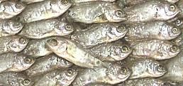

Not actually a perch, this fish is a member of family Anabantidae (Climbing gouramies - a different family from Gouramies proper). Able to tolerate extremely bad water conditions, this is an air breathing fish that can survive for weeks out of the water if it's kept damp. It can't actually climb trees though - individuals found in trees were left by birds.
Most climbing gourami species live in Africa and are too small to eat but this large one is found from India to China and considered a delicacy in Southeast Asia. It's both caught wild and farmed. The photo specimen was bout as large as they get at 9-7/8 inches, and weighed 11-3/8 ounces, but 6 inches is more typical.
More on Varieties of Fish (very
large page).
This is a rather strange fish, and not one I would seek out, but I sometimes buy it when the price is low. It probably has more appeal to people who were brought up with it. Ability to invade rice paddies and other temporarily flooded areas would make it available where other fish are not.
The flesh is medium colored and has a definite flavor which is not too strong and I find it easy to get used to. The flavor is more intense in the skin. The flesh may feel oily until cooked.
I have no idea how these are prepared and eaten in Asia, but due to the unusual structure of the fish I find no practical way to eat it except as fillets. A pan dressed fish, steamed or poached, is difficult to deal with on the plate even with chopsticks. The tiny bones all come loose and the fins fall apart - and the secondary body cavity is another problem.
Buying; Buy the largest ones you can get. The larger they are the easier they are to deal with. I've used fish between 5-1/2 and 9-3/4 inches weighing between 2-1/3 to 11-3/8 ounces.
Scales: The scales are large and have fairly good adhesion so they take a bit of energy to scrape off and fly about quite a bit. They're very transparent so it's hard to see if you got them all, use a thumbnail to track down stragglers and pull them off.
Cleaning: The head is wide, bony and difficult to deal with. The gills are hard to pull - you have to bend back the collar to get at them. I recommend just cutting it off and discarding it (it doesn't make very good stock). The innards are mushy but don't present much of a problem in the short body cavity - but then there's the subsidiary body cavity behind it. This appears to be a sort of lung allowing the fish to breath air. It is bony and turns an unattractive black when cooked, which is a major reason I recommend filleting.
Fillet: This is a pretty easy fish to fillet with a coherent fin/bone structure. Outline the fillet top and bottom, then work down to the backbone from front to back, crossing over at the tail and working forward to the rib cage. Cut the ribs from the backbone with kitchen shears and pull them from the fillet with long nose pliers.
There are some pretty nasty centerline spines for more than half the length of the fillet which need to be located and pulled straight forward. Then there's the subsidiary body cavity from the main cavity to the tail, Work your filleting knife under it and shave the whole cavity wall off the fillet, it's bony and turns black when cooked.
Skin: The skin is thick and tough as leather, so it's very easy to remove by the standard Method. It has almost no shrink at all so need not be removed for most uses, but it is a bit stronger in taste than the flesh. I usually remove it for poaching but leave it for pan frying.
Yield: An 11-3/8 ounce fish yielded 4-7/8 ounces of skin-on fillet (43%) and 3-7/8 ounces skin-off (34%). A 2.3 ounce fish yielded 0.9 ounces of skin-on fillet (39%). You probably wouldn't want to skin fillets that small.
Stock: Bones and fins make a rather strong stock with quite a bit of oil. I don't really care for the taste so I do not recommend it.

So what are you supposed to do with a tray of 300 or so 1 inch Climbing
Perch? There were about 300 fish in this tray, all between 1 and 1-1/2
inches long I haven't a clue what they do with these in Vietnam. Perhaps
they are fermented into a fish sauce. What I did was dust them with a mix
of rice flour and salt and deep fried them. Ate 'em "heads, guts and
feathers" with a dip of lemon juice and salt. They were OK, but not
something I'd seek out - not much flavor and a faintly bitter
aftertaste. Anchovies and Smelts are better for this sort of thing.